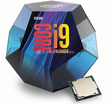

cool image of cpu(core i9):

Bottom side of an Intel 80486DX2, showing its pins
A central processing unit (CPU), also called a central processor or main processor, is the electronic circuitry within a computer that carries out the instructions of a computer program by performing the basic arithmetic, logic, controlling, and input/output (I/O) operations specified by the instructions. The computer industry has used the term "central processing unit" at least since the early 1960s.[1] Traditionally, the term "CPU" refers to a processor, more specifically to its processing unit and control unit (CU), distinguishing these core elements of a computer from external components such as main memory and I/O circuitry.[2]
The form, design, and implementation of CPUs have changed over the course of their history, but their fundamental operation remains almost unchanged. Principal components of a CPU include the arithmetic logic unit (ALU) that performs arithmetic and logic operations, processor registers that supply operands to the ALU and store the results of ALU operations and a control unit that orchestrates the fetching (from memory) and execution of instructions by directing the coordinated operations of the ALU, registers and other components.
Most modern CPUs are microprocessors, meaning they are contained on a single integrated circuit (IC) chip. An IC that contains a CPU may also contain memory, peripheral interfaces, and other components of a computer; such integrated devices are variously called microcontrollers or systems on a chip (SoC). Some computers employ a multi-core processor, which is a single chip containing two or more CPUs called "cores"; in that context, one can speak of such single chips as "sockets".[3]
Array processors or vector processors have multiple processors that operate in parallel, with no unit considered central. There also exists the concept of virtual CPUs which are an abstraction of dynamical aggregated computational resources.[4]